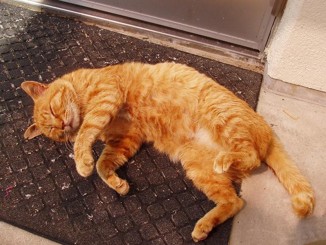

|
繋辞（be動詞）

ねぇレイン、これなぁに。


ねこーっ。
うにうに。
猫はアルカでketだよ。前にも出てきたね。
「これは猫です」は、"tu et ket"というの。

アルカは主語が最初に来るから、tuが「これ」で、etがbe動詞かな。

そう、etがbe動詞よ。"tu et oma"だと、「これは犬です」。

omaのところに形容詞は来れる？

来れるよ。"tu et kai"だと、「これは大きいです」とかね。

過去形は動詞に-atを付けるんだったね。
じゃあ「これは大きかった」は、"tu etat kai"か。
ところがそれは"tu at kai"になるのよ。
be動詞は一番使う動詞なので、etatの場合、etを省略してatだけにしてしまうの。
これは進行形の-orと完了形の-ikにも言えるよ。
"tu or kai"で、「大きくなっている」。"tu ik kai"で「大きくなった」みたいに。

じゃあ、英語みたいにwasやbeenを別途覚える必要はないのね。助かるわ。
be動詞はet。うん。"tu et miik"で、「これはリンゴ」です。
"xion axt arka"（紫苑はアルカを書く）と同じ文型なんだね。覚えやすいわ。
ところで、「紫苑はアルカを書きません」とか「書きますか？」っていうのはどう言うのかな。
疑問文と否定文だね。
じゃあ、次回はそれを扱いまーす。
紫苑、一生懸命だねo(^-^)o
|